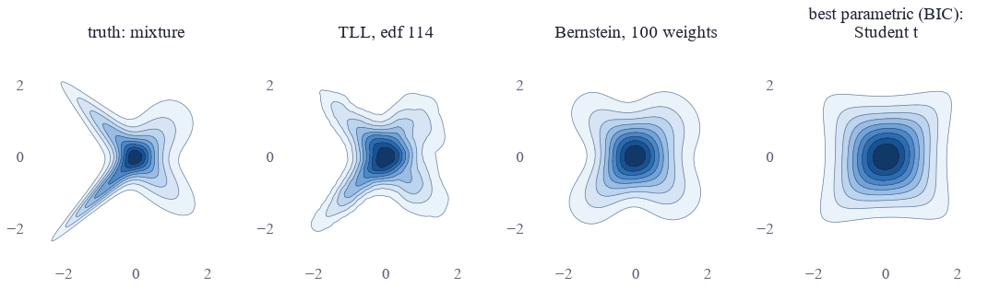
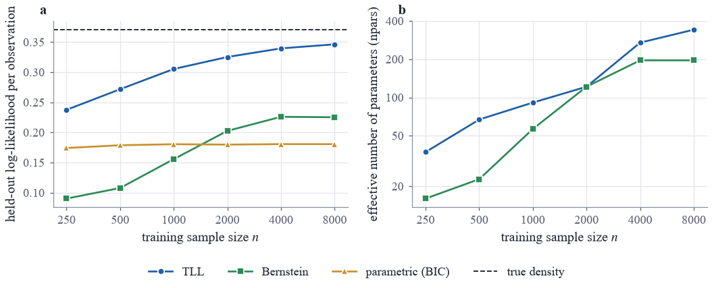

Nonparametric families¶
Two families let the data decide the shape of a pair copula instead of a parametric formula.
Their estimate is not a parameter vector but a table stored with the pair copula (the aux
component of fv_bicop and of each vine edge). This page summarises what they are; the
manual page on nonparametric families covers estimation, smoothing
choices and usage in detail.
| Property | TLL | Bernstein |
|---|---|---|
| Code | 24 (FV_TLL) |
25 (FV_BERNSTEIN) |
| Estimate | density on a \(30 \times 30\) grid in normal scores | cell weights on an \(m \times m\) grid, \(m \le 15\) |
| Smoothing | bandwidth \(\propto n^{-1/3}\), shaped by the correlation of the normal scores | order \(m\) chosen by AIC |
Complexity reported by npars / npars_eff |
effective degrees of freedom | \((m - 1)^2\) |
| Exchangeable, tails | whatever the data show (no tail dependence in the limit sense) | same |
| Rotations | none (not needed) | none |
Both families are excluded from the default family set; they are added with
ctl%nfam = FV_NCLASSIC or by listing FV_TLL / FV_BERNSTEIN in ctl%family_set.
TLL: transformation local likelihood¶
The transformation estimator (Geenens, Charpentier & Paindaveine 2017) avoids the boundary bias of kernel smoothing on the unit square by working in normal scores. With \(z_1 = \Phi^{-1}(u)\), \(z_2 = \Phi^{-1}(v)\) and \(f\) a kernel estimate of the density of \((z_1, z_2)\),
fortvine follows vinecopulib's local-constant variant: a Gaussian kernel whose bandwidth matrix is \(n^{-1/3}\) times a matrix built from the correlation of the normal scores (adjusted by a maximal-correlation estimate), the density evaluated on a \(30 \times 30\) grid of normal scores in \([-3.25, 3.25]\), and the margins of the gridded copula renormalised to uniform. Between grid points the density is interpolated bilinearly; the h-functions integrate the interpolant exactly, and so does the distribution function. The reported number of parameters is the effective degrees of freedom of the smoother, so AIC and BIC can compare TLL with parametric families.
Bernstein copula¶
The empirical Bernstein copula (Sancetta & Satchell 2004) smooths a two-dimensional histogram with Bernstein polynomials. Count the (weighted) observations in the cells of an \(m \times m\) grid, rebalance the cell masses \(W_{ij}\) by iterative proportional fitting so that every row and every column holds exactly \(1/m\) (which makes the result a proper copula), and set
The h-functions follow in closed form from binomial tail probabilities. The order \(m\) runs from 1 (the independence copula) to 15 and is chosen by AIC with \((m - 1)^2\) free cell weights; orders with \((m - 1)^2 \ge n/4\) are not tried.
How they compare¶


References¶
- Geenens, G., Charpentier, A. and Paindaveine, D. (2017). Probit transformation for nonparametric kernel estimation of the copula density. Bernoulli 23, 1848–1873.
- Nagler, T., Schellhase, C. and Czado, C. (2017). Nonparametric estimation of simplified vine copula models: comparison of methods. Dependence Modeling 5, 99–120.
- Sancetta, A. and Satchell, S. (2004). The Bernstein copula and its applications to modeling and approximations of multivariate distributions. Econometric Theory 20, 535–562.